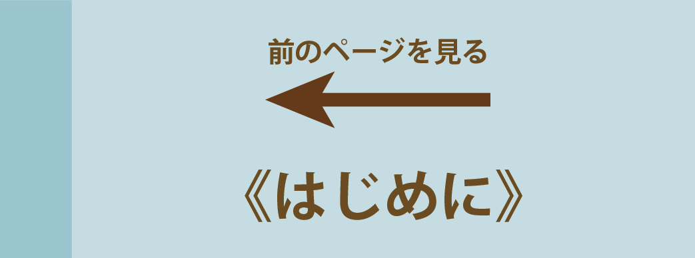

病院で医療を受けるとき、本人の
の情報がとても役に立ちます。
ふだんからよく観察すること、しっかり話し合っておくことが大切です！
話し合いの内容や、患者のふだんの生活や症状を記録しておくと、変化を確認したり、病院や家族と情報を共有することができます。
チェックリストを活用してください。

 ふだんからよく観察すること、しっかり話し合っておくことが大切です！
ふだんからよく観察すること、しっかり話し合っておくことが大切です！
ふだんからよく観察すること、しっかり話し合っておくことが大切です！
ふだんからよく観察すること、しっかり話し合っておくことが大切です！